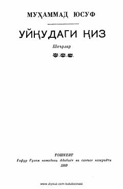

UQMuhammad Yusufning ilk muhabbat va hayrat tuyg'ulariga yo'g'rilgan she'riy to'plami.
Ushbu to'plam taniqli o'zbek shoiri Muhammad Yusufning ilk she'riy asarlaridan biridir. Kitobda shoirning yoshlik davridagi ilk muhabbat, hayrat va orzularga to'la lirik she'rlari jamlangan.